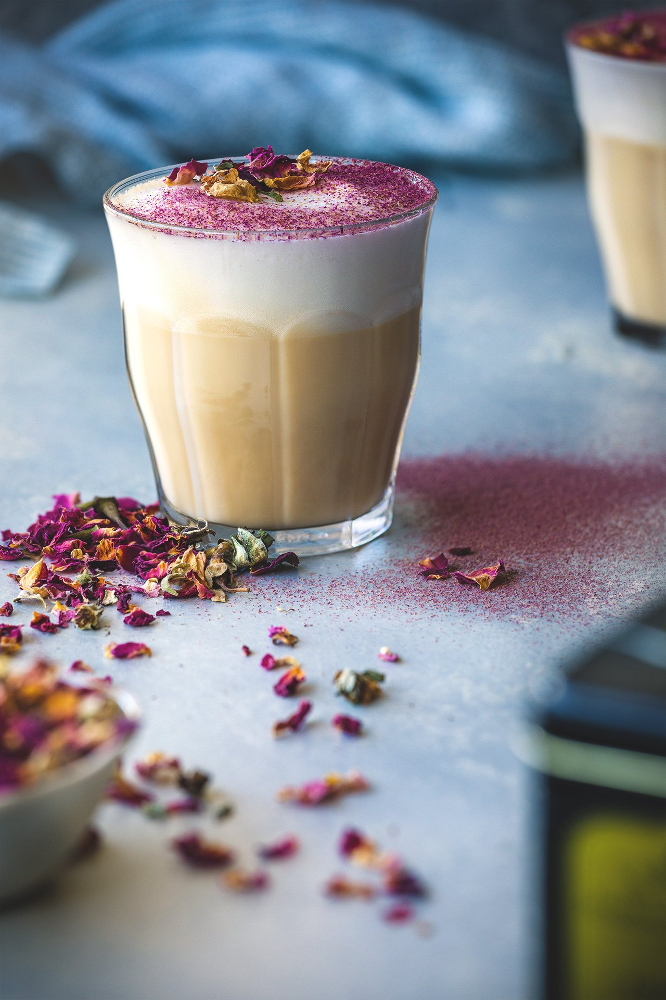

Rose & Earl Grey Latte

Description
The subtle flavors of Earl Grey and rose combine to create a luscious, warm, beautiful, and insanely aromatic cup of tea.
Servings: ~2 lattes
Ingredients
Rose Syrup
- 1/2 cup sugar
- 1/4 cup water
- 1/2 cup dried edible rose petals
Tea
- 1 cup boiling water
- 2 T earl grey tea
- 1 T dried edible rose petals
- 1 cup whole milk
- 4 tsp rose syrup
Steps
- Add sugar and water in saucepan over medium heat. Cook until sugar dissolves, turn off heat, add rose petals and steep for 5 minutes. Strain.
- Combine earl grey tea with rose petals and steep in boiling water for 5 minutes. Strain.
- Mix rose syrupt with milk, and froth (if making warm)
- Fill your mug halfway with tea (~4oz) and then add milk (~4 oz)